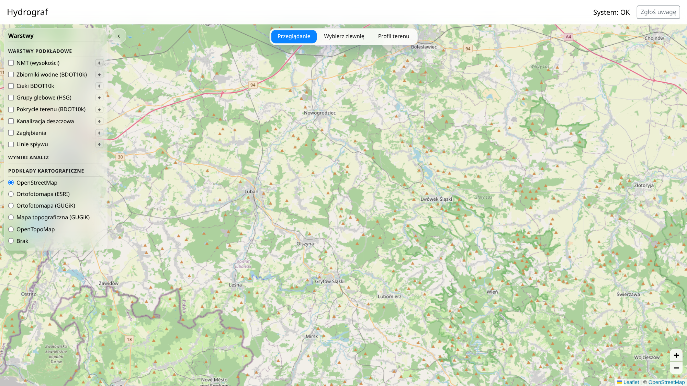
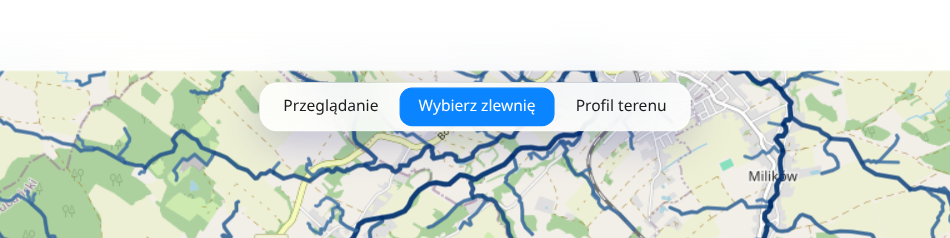
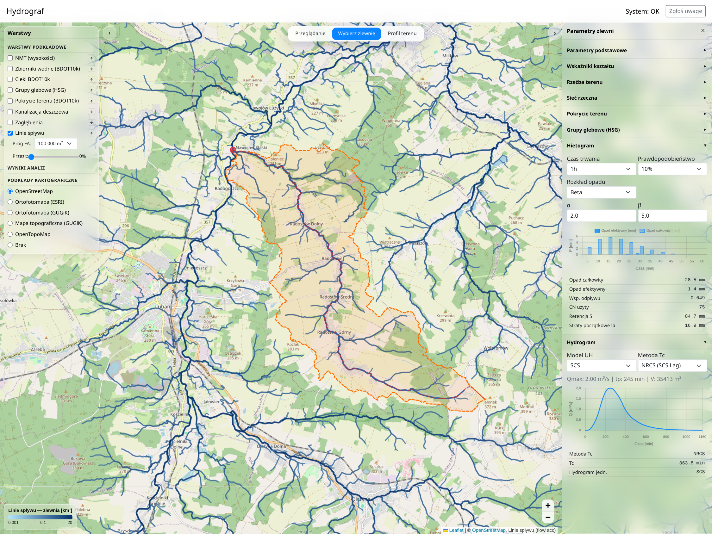
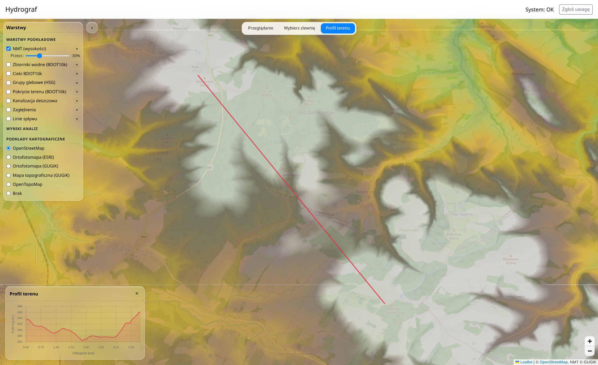
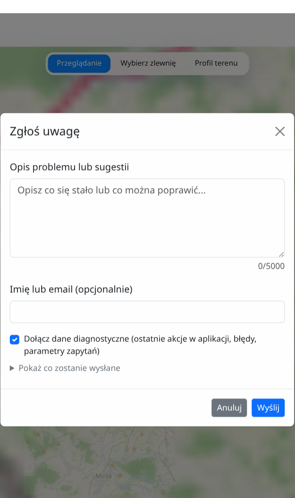

Krótki przewodnik po aplikacji
Mapa, zlewnie i scenariusze odpływu — poznaj podstawy obsługi i powiedz nam, co warto poprawić.
Wyniki, wyglad oraz funkcje mogą się zmieniać. Liczmy na wasze uwagi, żeby dostosować projekt do potrzeb użytkowników!
01 · Orientacja


Przesuwaj ją myszą i zmieniaj przybliżenie kółkiem lub przyciskami mapy.
Po lewej włączasz warstwy, po analizie po prawej odczytujesz wynik. Panele można zwijać.
Przeglądanie · Wybierz zlewnię · Profil terenu. Zaznaczony na niebiesko tryb jest aktywny.
02 · Pierwsza analiza
Przybliż mapę i sprawdź warstwy w panelu „Warstwy”, np. „Linie spływu”.
Włącz „Wybierz zlewnię”, a potem kliknij mapę w pobliżu linii spływu.
Granica pojawi się na mapie, a „Parametry zlewni” otworzą się po prawej stronie.
Brak wyniku? Sprawdź, czy punkt leży na obszarze dostępnych danych i spróbuj bliżej linii spływu.
03 · Wynik analizy

04 · Profil terenu

05 · Podstawowe funkcje
Zlewnia to obszar, z którego woda spływa do jednego miejsca. Jej powierzchnię i inne parametry odczytasz w prawym panelu.
Hietogram: opad w czasie. Hydrogram: przepływ wody w czasie. Gdy są dostępne, ustaw czas i prawdopodobieństwo opadu.
W trybie „Profil terenu” kliknij dwa punkty na mapie i zakończ podwójnym kliknięciem. Zobaczysz wykres wysokości.
NMT (numeryczny model terenu) pokazuje wysokości. Możesz też włączyć cieki i pokrycie terenu, jeśli są dostępne.
Hydrogram metodą SCS-CN dotyczy zlewni o powierzchni do 250 km².
06 · Pomóż nam ulepszać aplikację
Przycisk jest na górnym pasku aplikacji.
Podaj miejsce na mapie, wykonane kroki, oczekiwany wynik i to, co się wydarzyło.
Kontakt jest opcjonalny. Przejrzyj diagnostykę przed wysłaniem lub odznacz jej dołączenie.
